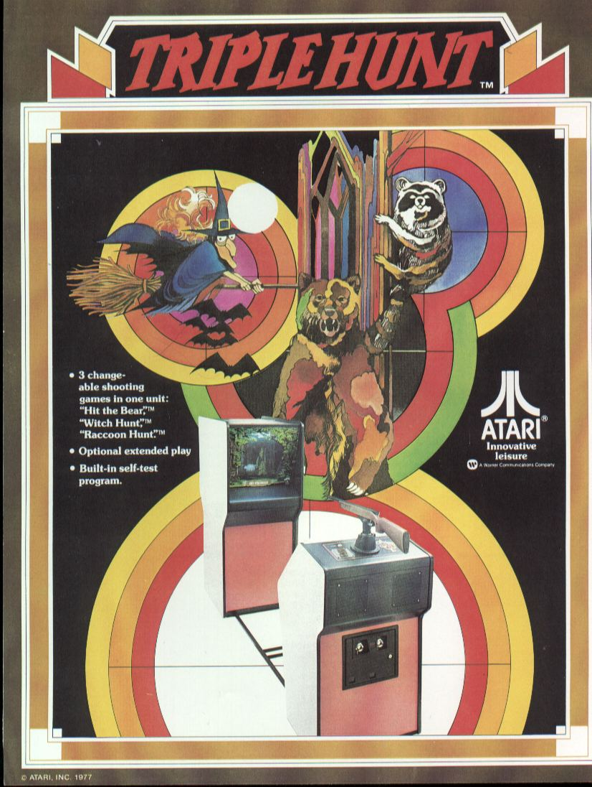
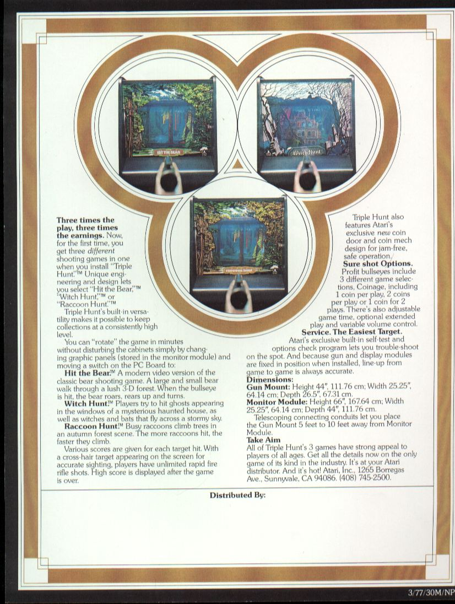
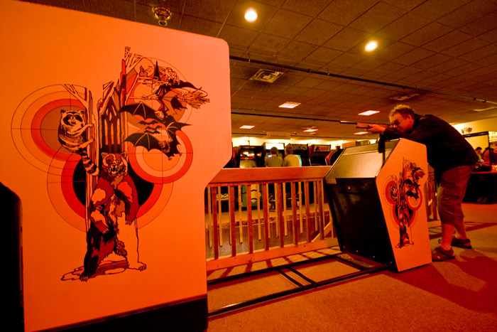
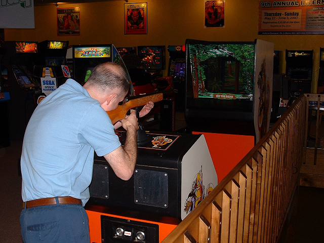
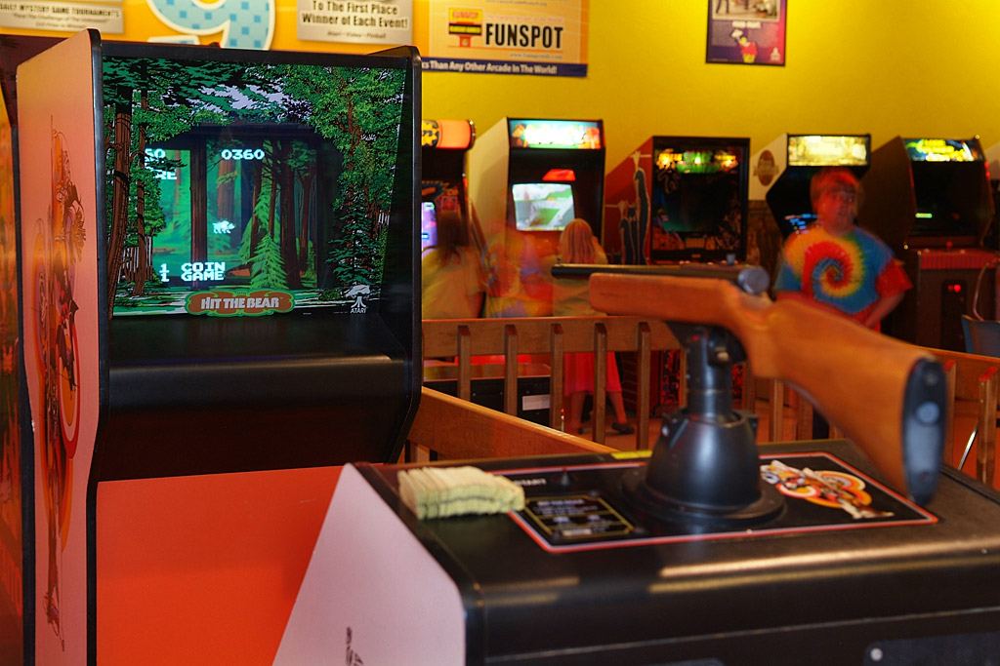

Triple Hunt - 1977 Atari Inc.
 

Triple Hunt had a half silvered mirror and the game graphics (simple shapes
and objects) were displayed on the screen and showed up OVER the background
graphics. We added a monitor mask that made the graphics seem to disappear
when they went behind things (like the bear walking behind a tree for example)
and the effect was great. Since hardware was not so advanced, it made witches
look like they were flying out of the windows as well. The other cool part
is that the gun recorded a hit by seeing the light from the screen when the
trigger was pulled. If the object was masked, you could not hit it.
Witch Hunt was an upright dedicated version of ONE of the games from Triple
Hunt. Triple Hunt had three games, and it seems that most arcades left it
in Witch Hunt, it was the most popular. The biggest problem was the size
of the game and how much space it took. I recall the building of the dedicated
game, I just never knew they sold any.
It is possible however that the game was sold in Europe and never released
in the US, that happened to a few titles. So I recall it being created, just
do not remember it it being sold.
The screen shots on the top right are the screen view only. These were displayed behind a half-silvered mirror and as
such had much more detail created by the bezel graphic elements. The shots with the graphics are shown at the bottom.
Thanks to American Classic Arcade Museum for many of these pictures. They have also published an article on Triple Hunt after an interview with me. See it here.

(from Classic Arcade Gaming site)

(Other images from Classic Arcade Gaming site)
KLOV entry
for Triple Hunt
|


{kind=link}
{kind=link}
{kind=link}
{kind=link}
{kind=link}
{kind=link}
{kind=link}
{kind=link}
{kind=link}
{kind=link}
{kind=link}